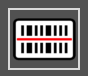
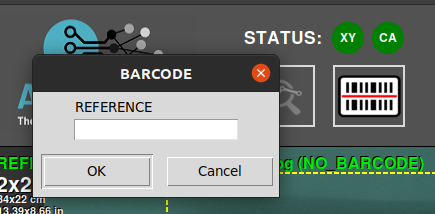

Interface Utilisateur
Zones de travail principales
L'image suivante décrit les principales zones de travail du logiciel d'inspection AgnosPCB.

Statut de la plateforme

Cette zone affiche l'état de la connexion avec la plateforme d'inspection et la caméra. Si la connexion échoue, les icônes deviennent rouges. Cette zone contient également les boutons d'action suivants :
Démarrer l'inspection

Le bouton Démarrer l'inspection déclenche l'inspection de l'image UUI actuelle. Ce bouton est disponible lorsque le bouton Traitement automatique est réglé sur OFF. C'est utile pour éviter de dépenser des crédits lorsque vous testez la manière de prendre des photos de vos PCBA.
Chargement de la RÉFÉRENCE par code-barres


Ce bouton ouvre une fenêtre contextuelle pour insérer un numéro de code-barres. Lors de la génération d'une RÉFÉRENCE, tout code-barres qu'elle contient peut être lu. Ce code-barres sera associé à la RÉFÉRENCE et pourra être chargé en utilisant ce numéro avec cette fonction. Il est également possible de lire le code-barres avec un lecteur portable et de l'insérer dans ce champ. Plus d'informations sur cette fonctionnalité ici.
Journal d'activité

La zone du journal d'activité est située dans la partie supérieure droite et affiche les crédits disponibles actuels et les détails opérationnels de l'application, tels que l'état du processus d'analyse.
Espace de travail principal

C'est la section principale où vous travaillez avec les images de RÉFÉRENCE et UUI, qui peuvent être commutées en appuyant sur la touche TAB du clavier ou le bouton sur l'application. Les résultats de l'inspection sont également affichés dans cette zone à l'aide de réticules et de numéros à côté des erreurs détectées.
Comparaison côte à côte

Cette section de l'interface est divisée en deux parties. La partie supérieure affiche l'image de RÉFÉRENCE, servant de standard de comparaison, tandis que la partie inférieure montre l'image UUI. Ces images sont agrandies et se déplacent en parallèle, montrant exactement la même zone dans la RÉFÉRENCE et l'UUI où le curseur pointe dans l'espace de travail principal.
Panneau de boutons

Voici diverses fonctions et options conçues pour optimiser votre flux de travail et accélérer vos tâches. Chaque fonctionnalité est définie ci-dessous :
Mosaïque de références


La mosaïque de références est utilisée pour stocker les RÉFÉRENCES en tant que fichiers afin de les trouver et de les charger rapidement. Le menu mosaïque apparaît automatiquement après avoir pris une RÉFÉRENCE en utilisant le bouton prendre une photo RÉFÉRENCE ou en la chargeant comme un fichier. Dans cette fenêtre, il est également possible de nommer la RÉFÉRENCE prise dans la partie supérieure droite de la fenêtre. Une RÉFÉRENCE stockée dans la mosaïque peut être rapidement chargée en appuyant sur un bouton F (F1-F10).
CHARGER RÉFÉRENCE en tant que fichier


Utilisez cette icône pour charger une image précédemment capturée en tant que RÉFÉRENCE, et elle vous permet de les trier par nom ou par date. Toutes les images de RÉFÉRENCE se trouvent dans le dossier APP/REFERENCE dans un dossier nommé d'après l'heure à laquelle la photo a été prise.
Note
Depuis la version 7, le logiciel n'autorise pas le chargement d'images provenant d'une source autre que la plateforme elle-même, car les images contiennent des paramètres spécifiques pour l'optique. Chaque image de RÉFÉRENCE doit être capturée à l'aide de l'AOI AI-4050.
Échange

Bascule entre les images de RÉFÉRENCE et UUI dans l'espace de travail principal.
Dessin de la zone de code-barres


Cliquez sur ce bouton pour dessiner manuellement un rectangle dans l'image de RÉFÉRENCE où se trouve un code-barres. Le logiciel le lira et utilisera ce code pour nommer les images et l'inclure dans le rapport PDF final. Plus d'informations sur la fonction de lecture de code-barres dans la section suivante.
Exclusion


Crée une zone d'exclusion où le système ne recherchera pas de défauts. Vous pouvez créer autant de zones que nécessaire. Cette fonction est détaillée dans la section suivante.
Sensibilité

Si le processus de fabrication nécessite un contrôle qualité plus rigoureux, vous pouvez augmenter la sensibilité de détection d'erreurs avec cette fonctionnalité. En augmentant la sensibilité, le logiciel signalera des erreurs qu'il ne détecterait pas normalement avec un réglage de sensibilité plus faible. Il existe trois niveaux de sensibilité : Normal, Élevé et Très Élevé. Il peut être réglé en utilisant les touches 1, 2, 3 du clavier. Cette fonction est détaillée dans la section suivante.
Aide

Ce bouton vous mènera à cette documentation.
Résultat final


Une fois que les erreurs détectées ont été supervisées par l'opérateur, l'inspection peut être complétée en appuyant sur ce bouton et, selon les critères de fabrication, en marquant la PCBA inspectée comme OK ou NON OK. Après cela, le logiciel créera un rapport qui inclut les erreurs signalées par l'opérateur dans un document PDF. Pour en savoir plus sur cette fonctionnalité, rendez-vous à la section suivante.
Prendre une image de RÉFÉRENCE


Ce bouton ouvre une fenêtre avec les utilitaires pour générer une image de RÉFÉRENCE à partir d'une PCB ou d'un panneau. Cette fonction peut être activée en appuyant sur la touche r du clavier. Dans la section générer une référence, vous en apprendrez davantage sur cette fonction.
UUI vers RÉFÉRENCE

Cette fonction convertit l'image UUI actuelle en une RÉFÉRENCE. C'est utile lorsque certains des composants de la PCBA ont été changés pour un équivalent et que le Réseau de Neurones le détecte comme une erreur en raison d'une différence visuelle, mais que la PCBA est correcte. Pour en savoir plus sur cette fonctionnalité, rendez-vous à la section suivante.
Prendre une image UUI


Cette fonction ouvre une fenêtre avec un aperçu en direct de la zone d'inspection. Une fois la PCBA correctement placée, appuyez sur le bouton Démarrer l'inspection pour prendre une photo ou des photos de la PCBA/Panneau de l'Unité Sous Inspection. Si le bouton traitement automatique est actif, l'inspection démarrera automatiquement une fois l'image UUI prise. Cette fonctionnalité peut également être activée en appuyant sur la touche s du clavier ou sur le bouton d'action physique situé sur le côté droit de l'AOI. Consultez la section suivante pour en savoir plus sur cette fonctionnalité.
Gomme

Supprime une zone d'exclusion dessinée.
Traitement automatique

S'il est activé, la prochaine photo UUI prise sera traitée automatiquement. Cela signifie que l'image sera analysée à la recherche de défauts juste après avoir été prise. Nous vous recommandons d'activer cette fonctionnalité pour accélérer le processus d'inspection.
Important
Pour les UNITÉS EN LIGNE, veuillez noter que chaque image UUI prise sera automatiquement envoyée à notre serveur pour traitement et consommera des crédits. Si vous ne faites que tester la manière de prendre vos photos, nous vous recommandons de désactiver cette fonctionnalité jusqu'à ce que vous soyez certain que les photos couvrent correctement la PCBA.
Paramètres

Ce bouton ouvre le menu des paramètres.